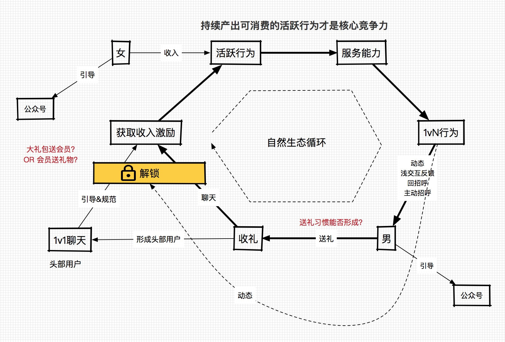
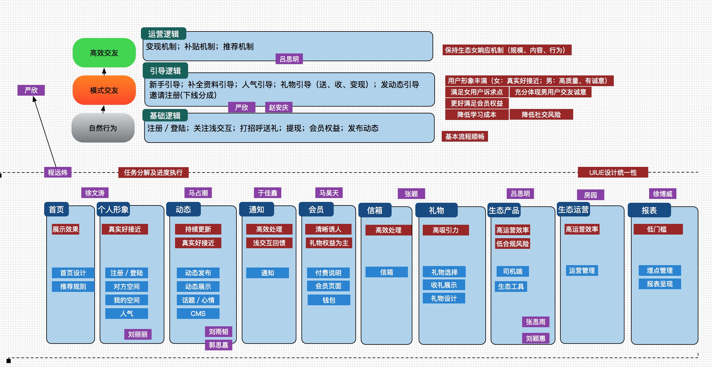

本周工作重心在做用户使用流程的详细设计、执行分工和资源分配。
几点思考
基本假设：
- 内容运营产生形成丰富
本周工作重心在做用户使用流程的详细设计、执行分工和资源分配。
基本假设：
从全团队的思想上，我目前将整个文化导向变成由产品驱动的生态的建设作为口径宣传，生态不能建立，整个项目对于公司来讲就失去意义，所有的团队的目标导向基本以自然用户的循环作为基础。
让我感动的一点是团队的核心人员开始觉得整个产品的构架变得越来越有意思和挑战，大家也会积极的从各方面进行思考。技术团队加上赵安庆，吕思明，马占潮，马昊天等小同学都非常积极的参与到项目之中，像严欣、程远炜、张颖能发挥重要作用，但热情比起小同学还是明显不足，请假比较多，无法取到较好的带头作用，这个也让我很头疼，下周我会对这几个人逐步进行愿景和价值观的沟通。
通过分析，收入刺激女用户的产生行为应该没有太大的问题，唯一的问题是这些刺激（人均30-50）产生的行为是否能提供足够的服务能力，这个是我最担心的一个问题，需要加紧时间进行验证。 引导逻辑将全力围绕女用户循环全力推进。


在专案指引发布之后，在郭缇缇的带领下，通过多样化能力互补的原则，迅速圈定了7个小组成员。利用每次上课中午休息及下课后的时间，小组进行多次自由讨论，提出了『花煦卫生棉条』、『少儿健身』、『阳光工程』几个备选的选题。为期半个月的充分讨论及沟通，确定以『花煦卫生棉条』作为本专案的选题。
此项目是一个真实案例，前期我们邀请企业创始人团队和重要合作伙伴进行多轮沟通，力求让小组站在企业经营者层面思考企业面对的市场机会、问题和业务发展思路。过程中基本摸清了市场、竞争者、用户、产品的诸多现状和思路，利用IMC课程给予的专业性指导，产出小组认为最为有效的整合营销方案。
专案执行分为两个关键性阶段：『营销策略的制定』和『围绕策略的行动项目实施』。
在两个项目阶段，为克服成员时间不一致可能导致专案执行受阻风险，建立一套有效沟通方法论：『策略一致性 + 合理分工 + 战术鼓励创新 + 定期方案整合』，最终使得专案如期完成。
在整个专案的过程中，主要遇到了以下两个比较的棘手的问题，通过小组的群策群力，较为完美的得到解决：
卫生棉条的市场分析，如何准确拿到靠谱的市场分析数据
该品类处于市场导入期，在公信的第三方渠道拿到的数据很少，不足与支撑小组接下来的分析。这是个很头疼但必须解决的问题，小组立即召开了针对这个问题的会议，并制定了如下的行动计划：
小组成员自己的工作都非常繁忙，每周或双周的见面的沟通效率在前期比较低下，基本未能达成沟通前的预期。 针对这个问题的解决，高伟南和郭缇缇给出了比较好的解决方案。
报告的过程中，耗时最长、分歧最大的地方是在营销策略的选择上。 卫生棉条品类正处于市场导入期，强势品牌未进入中国，主要通过海淘方式购买，中国本土的品牌刚刚起步。
在策略的选择上有两种主流声音：
第一种看法是经典品牌打法，在资金有限的情况下（5000万），这种玩法显然是转不起来。
创始团队更倾向后一种做法，基本忽视品牌知名度的投入，因为回报周期长，性价比不好评估，或者说短期性价比太低。
而小组认为，在保障销售指标的基础上，在市场导入期以部分投入于，将形成品牌先发优势，助力中长期业务发展。
组长：郭缇缇
秘书长：高伟南
乙方：施小强/林丹妮
媒体：郑志平/齐雪
专家：沈童
郭缇缇是花煦卫生棉条这个项目的提议者，作为资深女性社区大姨吗APP高管，花煦是其公司合作伙伴之一，对于项目和创始人团队都十分熟悉，在项目后续过程中，市场分析的数据支撑、花煦创始人团队的沟通以及沟通场所的提供给予专案非常大的支持。
高伟南：资深外企项目经理，优秀的项目控制能力使专案在任务拆解、分配、跟踪、协调、沟通都做的十分优秀，以确保按时按质达到里程碑目标。
施小强/林丹妮：两人表现出很强的市场能力，对于市场环境分析、客户分析都较为专业。
郑志平(本人)/齐雪：我和齐雪属于业务能力比较突出的，郑志平在定位分析，营销战略的选择经验较为丰富；齐雪对于媒体和渠道投放、预算控制比较有经验。
沈童：资深媒体人，擅长通过媒体接触点向客户传达信息。
本人供职的公司（友缘在线）主要基于无线互联网为大众用户提供生活服务，前几年，业务快速发展很大程度来自无线互联网领域快速发展的红利。当无线互联网大规模普及融入大众用户的日常生活，用户的选择范围日益增大，对服务质量和品牌要求随之而来，即成熟市场，已经从卖方市场向买方市场转移。要想发展，历史成功路径的依赖通常会成为阻碍。建立品牌力，解决用户需求为其提供价值才是企业在下阶段的发展之道。
本次的专案的两个阶段：
1. 营销策略：立足于市场需求，通过用户细分洞察各类用户对产品的利益点，结合公司自身的优劣势制定最合理的营销策略，并定出营销目标。
2. 行动项目执行：通过对用户旅程和各历程接触点的分析制定营销传播的执行方案，定出时间表和预算分析，检讨与评估来保障执行效果。
这两个阶段所使用的知识体系和方法论将对于消费升级背景下友缘在线持续发展提供强有力的指导。
在营销策略的选择上，专案选择了第一目标做品牌知名度，第二目标做销量，第三作复购，逻辑是品牌定位、销售量和服务。 本人有过几次创业和大公司供职经历，经历主要都放在销售额的达成上，对品牌和用户服务重视不够。在消费升级的大背景下，市场逐步由卖方市场过度到买方市场，对品牌、服务质量、口碑等越来越重视。
这块对我的启发很大，也是大势所趋，让我更多的意识到自己以前思维的局限性。
郭缇缇 8分 专案小组长，主导项目，注重分享。
高伟南 9分 秘书长，负责有热情，团队粘合剂。
施小强 8.5分 逻辑思维和文案能力强
林丹妮 8.5分 热情、细致、文案能力强
郑志平 8分 注重团队配合
齐雪 7.5分 团队开心果
沈童 8分 睿智、注重分享
各位，新产品在11月15日完成产品框架和用户形象『真实好泡』调性的基建工作之后，将会转入『通过男女用户连接强化真实好泡』的第二层基建，对这层咱们有必要进行第一次充分深入的讨论，以便安排下一个阶段的工作。
基本假设： 通过女性用户发布的动态内容来取代1.0产品通过信件进行的强刺激，进一步强化真实好泡的产品调性。
讨论内容为：
1. 主要的交互逻辑
2. 自然女的循环 是否同步进行？如果同步，循环的逻辑
还有个重要问题，需要今晚详细讨论。
微信上业务目前陷入了很大的困境，客户端的渠道风险也在凸显，这使几个生死攸关的问题摆在了我们面前：
1、如何快速提升总收入水平，以确保明年上半年的收入同比增长；
2、如何维持明年上半年的利润水平；
3、如何确保渠道环境不继续恶化；
4、如何加快新产品开发和投入运营的速度；
这几个问题请大家思考一下，在今天下午运营委员会的会议中进行讨论。此次会议，也邀请徐威列席。
明年上半年
人力成本 5500万，市场费用 1500w
如果同今年上半年持平的情况下
净利润 5800w， 日财务毛利： 85w以上（差20w） 毛利率 45% 日收入：190w （差40w）
基本假设：通过内容替代信件，提升连接效率强化真实好泡的交友预期。
男用户付费更有效率获得女用户回复
男用户贡献有价值行为路径获得女用户主动的机会
浏览内容 --> 关注 ---> 持续更新的内容 --> 对内容的互动 --> 信箱
对人的浏览 --》 信箱
几个问题
1. 减轻付费承诺，会不会使付费率大降？ 相当于产品变了？提升付费率OR提升客单价？
2. 服务承诺的兑现会不会使运营成本大幅度提升？